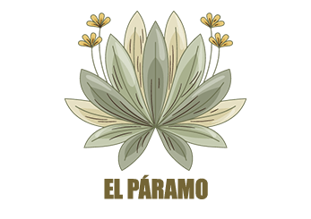

El oso de anteojos es el único oso de Sudamérica y habita en la cordillera de los Andes,
incluyendo regiones de Colombia como el Parque Nacional Natural Chingaza. Vive en bosques andinos y páramos,
y se reconoce por las manchas claras alrededor de sus ojos que parecen anteojos.
Su alimentación es principalmente vegetal, basada en frailejones, frutas y bromelias como la puya.
Se estima que existen entre 2.500 y 10.000 individuos en estado silvestre, por lo que es una especie vulnerable
cuya conservación es fundamental para el equilibrio de los ecosistemas andinos.
El venado de cola blanca es un mamífero herbívoro ampliamente distribuido en América, presente en países como Colombia,
donde habita en bosques, sabanas y páramos como el Parque Nacional Natural Chingaza. Se caracteriza por su agilidad y
por la cola blanca que levanta como señal de alerta ante posibles peligros.
Su alimentación se basa en hojas, brotes, frutos y pastos, cumpliendo un papel importante en la dispersión de semillas
y el equilibrio del ecosistema. Aunque no está en peligro crítico, sus poblaciones pueden verse afectadas por la caza y
la pérdida de hábitat, por lo que su conservación sigue siendo importante.
La pava andina es un ave propia de los bosques andinos, presente en países como Colombia y común en zonas de montaña
cercanas a páramos como el Parque Nacional Natural Chingaza. Se caracteriza por su plumaje oscuro, su tamaño mediano y su canto fuerte,
que suele escucharse en las mañanas.
Se alimenta principalmente de frutos, hojas y semillas, desempeñando un papel clave en la dispersión de plantas dentro del ecosistema.
Aunque no se encuentra en peligro crítico, puede verse afectada por la deforestación y la caza, por lo que su conservación es importante
para mantener el equilibrio de los bosques andinos.
Es una planta emblemática de los páramos andinos de Colombia, presente en ecosistemas como el Parque Nacional Natural Chingaza.
Puede vivir más de 100 años y se reconoce por su tallo alto y sus hojas cubiertas de vellosidades que le ayudan a soportar el frío extremo.
Su función en el páramo es fundamental: **captura la humedad de la neblina y la transforma en agua**, regulando el ciclo hídrico y abasteciendo
fuentes que llegan a ciudades como Bogotá. Además, ayuda a prevenir la erosión del suelo y a mantener el equilibrio del ecosistema, siendo clave para
la conservación del agua y la vida en la región.
Conocida comúnmente como bromelia, es una planta típica de los ecosistemas andinos de Colombia, presente en bosques y páramos como el Parque Nacional Natural Chingaza.
Se caracteriza por sus hojas dispuestas en forma de roseta, capaces de almacenar agua en su interior y adaptarse a condiciones de alta humedad y bajas temperaturas.
Su función en el páramo es clave, ya que **retiene agua de la lluvia y la neblina**, creando pequeños reservorios que benefician a otros organismos. Además, proporciona
refugio y alimento a diversas especies y contribuye a mantener el equilibrio hídrico del ecosistema, siendo fundamental para la conservación de la biodiversidad.
Conocido como líquen o “barba de viejo”, es un organismo que resulta de la asociación entre un hongo y un alga, común en ecosistemas fríos y húmedos de Colombia,
como el Parque Nacional Natural Chingaza. Se caracteriza por su apariencia colgante y fibrosa, creciendo sobre troncos y ramas de árboles en ambientes de aire limpio.
Su función en el páramo es fundamental, ya que **absorbe la humedad del ambiente y contribuye al ciclo del agua**, además de ser un importante indicador de la calidad del aire.
También participa en la formación del suelo y proporciona microhábitats para pequeños organismos, ayudando al equilibrio del ecosistema.
La Telipogon berthae es una orquídea propia de los ecosistemas altoandinos de Colombia, presente en ambientes húmedos y fríos cercanos al páramo, como los del Parque Nacional Natural Chingaza. Se caracteriza por sus flores llamativas y complejas, que presentan formas y colores únicos adaptados a la polinización por insectos. Su función en el ecosistema está relacionada con la **polinización y la biodiversidad**, ya que forma parte de las interacciones entre plantas e insectos. Además, contribuye al equilibrio del páramo y los bosques altoandinos, siendo una especie importante dentro de estos ecosistemas, aunque vulnerable a la pérdida de hábitat.
Descubre la magia del páramo y la riqueza natural del Parque Nacional Natural Chingaza. Sus paisajes, lagunas y especies únicas lo convierten en un destino ideal para quienes desean conectarse con la naturaleza y conocer uno de los ecosistemas más importantes de Colombia. Si quieres saber más sobre el recorrido o recibir información sobre cómo visitarlo, contáctanos y estaremos encantados de ayudarte a planear tu experiencia.